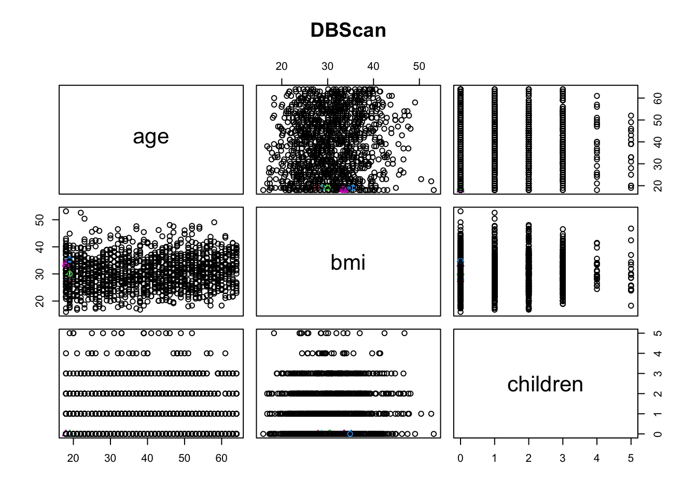

library(fpc) Understanding DBSCAN Clustering Analysis in Machine Learning
Introduction
Density-Based Spatial Clustering of Applications with Noise (DBSCAN) is a popular clustering algorithm used in machine learning. Unlike other clustering algorithms such as K-means or hierarchical clustering, DBSCAN does not require the user to specify the number of clusters a priori. Instead, it infers the number of clusters based on the data's density.
How DBSCAN Works
DBSCAN works by defining a cluster as a maximal set of density-connected points. It starts with an arbitrary point in the dataset. If there are at least minPts within a radius of eps from that point, a new cluster is created. The algorithm then iteratively adds all directly reachable points to the cluster. Once no more points can be added, the algorithm proceeds to the next unvisited point in the dataset.
Advantages of DBSCAN
DBSCAN has several advantages over other clustering algorithms:
No need to specify the number of clusters: As mentioned earlier, DBSCAN does not require the user to specify the number of clusters a priori. This can be particularly useful when the number of clusters is not known beforehand.
Ability to find arbitrarily shaped clusters: Unlike K-means, which tends to find spherical clusters, DBSCAN can find clusters of arbitrary shapes.
Robustness to noise: DBSCAN is less sensitive to noise and outliers, as it only adds points that are directly reachable according to the density criteria.
Disadvantages of DBSCAN
Despite its advantages, DBSCAN also has some limitations:
Difficulty handling varying densities: DBSCAN struggles with datasets where clusters have significantly different densities. This is because a single
epsandminPtsvalue may not be suitable for all clusters.Sensitivity to parameter settings: The results of DBSCAN can be significantly affected by the settings of
epsandminPts. Choosing appropriate values for these parameters can be challenging.
In this blog post, we will perform a DBSCAN clustering analysis on an insurance dataset using R.
Load necessary libraries
# Load the data into R
data <- read.csv('/Users/test/Desktop/Machine_learning/mlblog/kchhetrii.github.io/insurance.csv')
# Lets see the couple of rows of this data
head(data) age sex bmi children smoker region charges
1 19 female 27.900 0 yes southwest 16884.924
2 18 male 33.770 1 no southeast 1725.552
3 28 male 33.000 3 no southeast 4449.462
4 33 male 22.705 0 no northwest 21984.471
5 32 male 28.880 0 no northwest 3866.855
6 31 female 25.740 0 no southeast 3756.622The dataset contains information about individuals such as their age, sex, BMI, number of children, smoking status, region, and charges.
str(data)'data.frame': 1338 obs. of 7 variables:
$ age : int 19 18 28 33 32 31 46 37 37 60 ...
$ sex : chr "female" "male" "male" "male" ...
$ bmi : num 27.9 33.8 33 22.7 28.9 ...
$ children: int 0 1 3 0 0 0 1 3 2 0 ...
$ smoker : chr "yes" "no" "no" "no" ...
$ region : chr "southwest" "southeast" "southeast" "northwest" ...
$ charges : num 16885 1726 4449 21984 3867 ...Preprocessing the Data
Before we can perform DBSCAN clustering, we need to preprocess the data. This typically involves normalizing the data and converting categorical variables into numerical variables. However, for simplicity, let’s just use the numerical columns in our dataset:
data_num <- data[, sapply(data, is.numeric)]
head(data_num) age bmi children charges
1 19 27.900 0 16884.924
2 18 33.770 1 1725.552
3 28 33.000 3 4449.462
4 33 22.705 0 21984.471
5 32 28.880 0 3866.855
6 31 25.740 0 3756.622Perform DBSCAN on the loaded dataset:
Remove label form dataset
med <- data_num[-4] Fitting DBSCAN clustering model:
set.seed(0) # Setting seed
Dbscan_cl <- dbscan(med, eps = 0.45, MinPts = 5)
Dbscan_cldbscan Pts=1338 MinPts=5 eps=0.45
0 1 2 3 4 5
border 1310 5 2 4 3 4
seed 0 1 5 1 1 2
total 1310 6 7 5 4 6In this code, eps is the maximum distance between two samples for them to be considered as in the same neighborhood, and MinPts is the number of samples in a neighborhood for a point to be considered as a core point.
Visualizing the Results
Finally, let’s visualize the results. We will create a scatter plot of the data, with each point colored according to its cluster assignment:
# Table
table(Dbscan_cl$cluster, data_num$age)
18 19 20 21 22 23 24 25 26 27 28 29 30 31 32 33 34 35 36 37 38 39 40 41 42
0 63 46 29 28 28 28 28 28 28 28 28 27 27 27 26 26 26 25 25 25 25 25 27 27 27
1 0 6 0 0 0 0 0 0 0 0 0 0 0 0 0 0 0 0 0 0 0 0 0 0 0
2 0 7 0 0 0 0 0 0 0 0 0 0 0 0 0 0 0 0 0 0 0 0 0 0 0
3 0 5 0 0 0 0 0 0 0 0 0 0 0 0 0 0 0 0 0 0 0 0 0 0 0
4 0 4 0 0 0 0 0 0 0 0 0 0 0 0 0 0 0 0 0 0 0 0 0 0 0
5 6 0 0 0 0 0 0 0 0 0 0 0 0 0 0 0 0 0 0 0 0 0 0 0 0
43 44 45 46 47 48 49 50 51 52 53 54 55 56 57 58 59 60 61 62 63 64
0 27 27 29 29 29 29 28 29 29 29 28 28 26 26 26 25 25 23 23 23 23 22
1 0 0 0 0 0 0 0 0 0 0 0 0 0 0 0 0 0 0 0 0 0 0
2 0 0 0 0 0 0 0 0 0 0 0 0 0 0 0 0 0 0 0 0 0 0
3 0 0 0 0 0 0 0 0 0 0 0 0 0 0 0 0 0 0 0 0 0 0
4 0 0 0 0 0 0 0 0 0 0 0 0 0 0 0 0 0 0 0 0 0 0
5 0 0 0 0 0 0 0 0 0 0 0 0 0 0 0 0 0 0 0 0 0 0# Plotting Cluster
plot(Dbscan_cl, med, main = "DBScan") 
In this plot, points that belong to the same cluster have the same color.